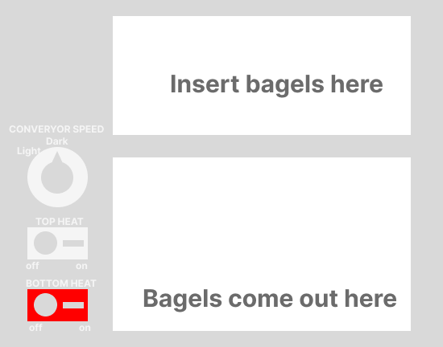

As the most popular dining hall at Brown University, Sharpe Refectory (otherwise known as the Ratty) is well-equiped with different types of facilities. However, not all of them are equally user-friendly. For example, I recently noticed that the toaster, as something that I use quite frequently, is not that easy to use and I actually did not understand all of its functionality.
The interface that I decided to investigate was the toaster in the Ratty. It is in a public area, which makes it easier for me to observe how people interact with it without making them feel uncomfortable
Apart from the conveyor belt where you insert bagels and the tray that catch toasted bagels, there are three interactive elements on the interface: a knob and two buttons. The knob controls the conveyor speed; to slow down, the user needs to turn the knob counter-clockwise, and vice versa. The top button is an on/off switch for the top heat. The bottom button is an on/off switch for the bottom heat, but it also functions as the overall power switch. When the buttom button is switched off, the entire machine shuts down.
 Figure 1: An illustrative version of the toaster interfacePeople either use the toaster very often (multiple times a week) or very rarely (once every multiple weeks).
People usually prefer their bagels golden, so oftentimes they need to put the bagel in the toaster twice.
No one really fully knows what each knob does. Most people simply read what's written on the interface. A few people got confused because they weren't sure how conveyor speed could be "Dark" or "Light." No on mentioned that the bottom heat button is also an overall power switch.
Sometimes bagels would get stuck in the toaster, which could lead to fire hazard.
Figure 2: Jerry is a first year Computer Science student who uses the toaster once every two weeks.
Figure 3: Melissa is a third year biology student who loves bagels and uses the toaster three times a week.